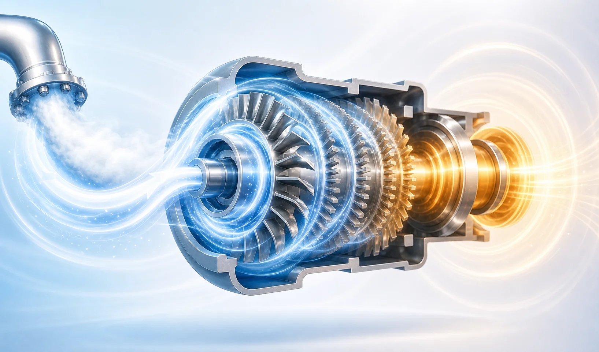
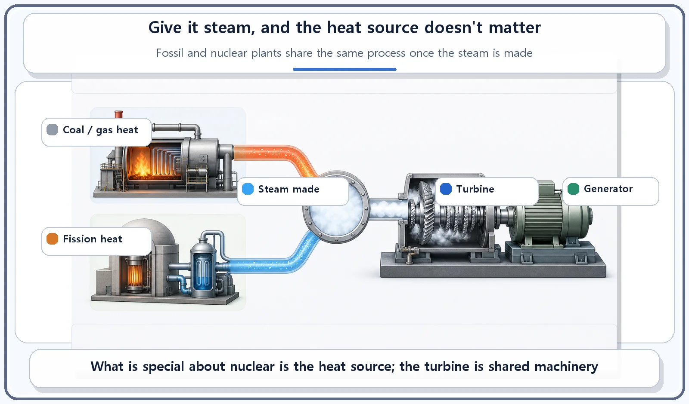
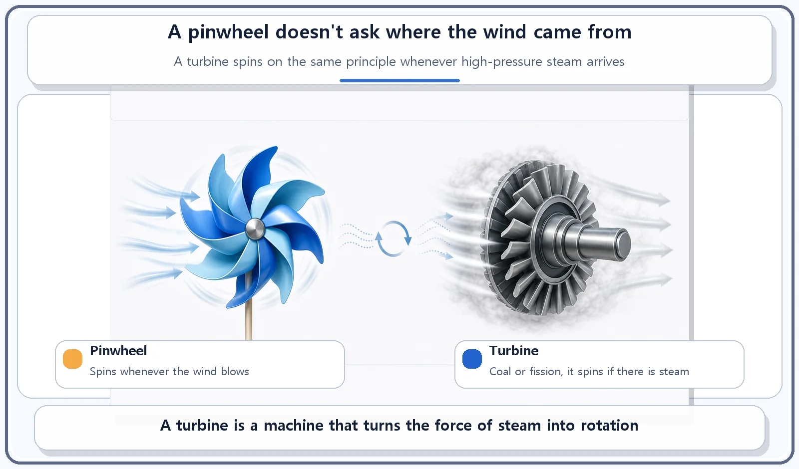

Reactor Components · 065
All It Needs Is Steam — Why the Turbine Isn't Nuclear Technology
The nuclear part ends at the reactor. The turbine and generator run on the same steam-cycle principles as a fossil plant.

The nuclear part of a nuclear power plant ends at the reactor that makes the heat. The turbine that turns steam into rotation, and the generator it drives, work on the same principles as in a coal or gas plant. A turbine does not care where its steam came from, only that it arrives at enough pressure.
A pinwheel doesn't care where the wind comes from
A pinwheel spins as long as the wind blows. Whether that wind comes from an electric fan or a natural breeze makes no difference to the pinwheel. A water wheel is the same: it turns as long as water flows, and it doesn't ask whether the water is rainwater or came down from a reservoir.
So far we have stayed inside the reactor, all the way out to the containment building. Now we follow the steam it produces on its way to becoming electricity. And here is a slightly surprising fact: this stage is not actually a technology unique to nuclear power.
The turbine: a machine that turns steam into rotation
A turbine is a rotating machine that converts the push of high-pressure steam, expanding against its blades, into rotary motion. Steam made in the steam generator travels through piping into the turbine, where it expands as it pushes through several stages of blades in turn, and in the process the turbine shaft spins at high speed.
The turbine shaft is connected directly to the generator, so when the turbine turns, the generator turns with it. Inside the generator, this rotation is converted into electricity by the principle of electromagnetic induction.

Why call it "mechanical technology, not nuclear technology"?
What a turbine actually does is convert the expansion energy of high-pressure steam into rotary motion. Where that steam came from, whether it was made by burning coal, burning natural gas, or by nuclear fission, makes no difference to the turbine.
Fossil-fuel and nuclear power plants differ only in their heat source. The back half of the process, using that heat to make steam that spins a turbine and generator to produce electricity, follows essentially the same principles in both. Just as a pinwheel doesn't care where the wind comes from, a turbine turns as long as it is supplied with steam at sufficient pressure. There is one difference: because of the physical limits on reactor coolant temperature, the turbine in a nuclear plant often receives steam at a relatively lower temperature and pressure than in a fossil plant, and its design is optimized with that in mind.

| Fossil plant (coal, gas) | Nuclear plant (PWR) | |
|---|---|---|
| Heat source | Burning coal or natural gas | Nuclear fission in the reactor |
| Steam to turbine | Yes | Yes (via the steam generator) |
| Turbine and generator principle | Steam expansion → rotation → electromagnetic induction | Same |
| Typical steam conditions | Relatively higher temperature and pressure | Often relatively lower, limited by reactor coolant temperature; turbine design optimized for it |
Easy mix-ups
The reactor and the turbine play different roles. The reactor is the heat source that makes heat; the turbine is the machine that turns the steam made with that heat into rotary motion. Because of the name "nuclear power," it's easy to assume the turbine is nuclear-specific technology too, but the way a turbine works is general-purpose mechanical engineering shared with fossil power plants.
The turbine and the generator are different devices, too. The turbine is the machine that creates rotary motion. The generator is a separate device that uses that rotation to make electricity through electromagnetic induction. The two are connected on the same shaft and spin together.
The short version
A turbine converts the expansion energy of high-pressure steam into rotary motion, and that rotation drives the generator that makes electricity. It doesn't care where the steam comes from, so fossil and nuclear plants share the same back-half principle. In nuclear power, the "nuclear technology" part runs up to the reactor that makes the heat; the turbine is general mechanical technology.
Next, we'll follow that steam after it leaves the turbine and turns back into water: the condenser and the cooling tower.